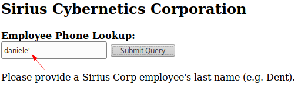

Visibility of SQLi
What we need to keep an eye on
While SQL injection is typically not found as commonly as before (due to new changes such as PHP Data Objects (PDO), a database access layer providing a uniform method of access to multiple databases types) it is still always worth testing for as they may be filtering certain characters to prevent SQL injection.
One thing to note is typically legacy code is more vulnerable to SQL injection so keep an eye out for old features.
When testing for SQL injection yes you could simply use ' and look for errors but a lot has changed since the past & these days a lot of developers have disabled error messages so
Time-based Blind SQLi(sleep payload) usually will slip through any filtering. As well as this it is easier to indicate if there is a delay on the response which would mean your payload was executed blindly.
Visibility of SQLi flwas
• In-Band/Inline SQLi → the end user(penetration tester) can see, largely unfettered, the results of the SQLi directly. This makes this class of SQLi flaw the simplest for us to both discover and exploit
◇ How recognize it?
▪ database error messages. This indicate a problem with the DB, which we presume is based on something we submitted. In fact, the most common way to initially attempt discovery of SQL flaws is to simply submit characters that are likely to cause a DB error message


• Inferential/Blind SQLi → This type of SQL injection is different from the previous one, as it is not possible to see the errors or the results in the application's response. We need to infer what is happening in the application's backend or use external channels to get the information. At the same time, into the inferential SQL injections are further divided into two types:
◇ Boolean-based blind SQL injection: In this type of SQL injection, the statements are focused on changing a Boolean value into the application in order to get different responses. Even though the SQL injection result is not showed directly, the HTTP response content could change to infer the result.
◇ Time-based blind SQL injection: This inferential SQL injection depends on the time lapsed to generate a response by the database server. With time variations, it is possible to infer whether the SQL injection is successful or not. To do so, the malicious user inserts functions included in the DBMS to determine what is happening in the backend.
◇ Out-of-band SQL injection: In this type of SQL injection, it is not possible to use the same channel to see the error response or infer the result directly. So, we need to use an external channel to know whether the SQL injection is successful or not. For example, using second data storage to receive the results, such as DNS resolution to infer the time lapsed in a request, which is not possible to see in the application.
bibliography:
The Web Application Hacker's Handbook